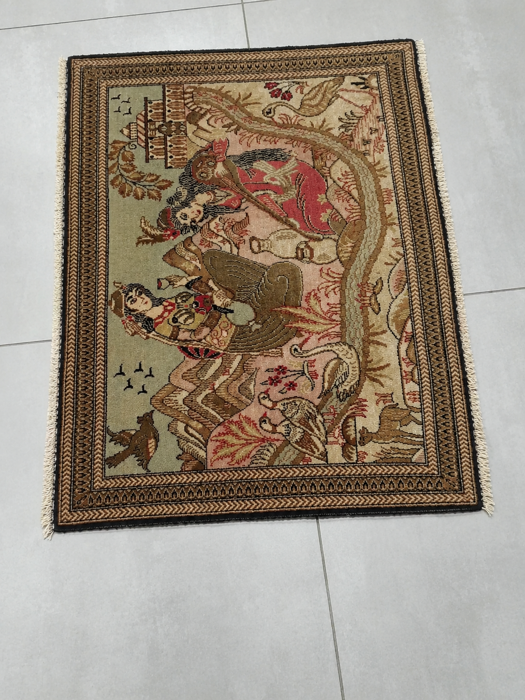
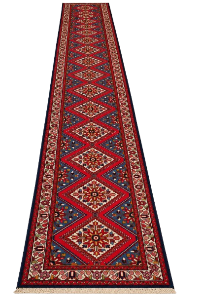
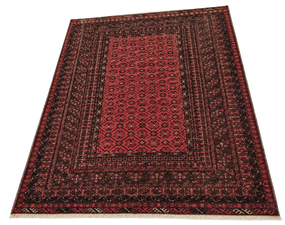
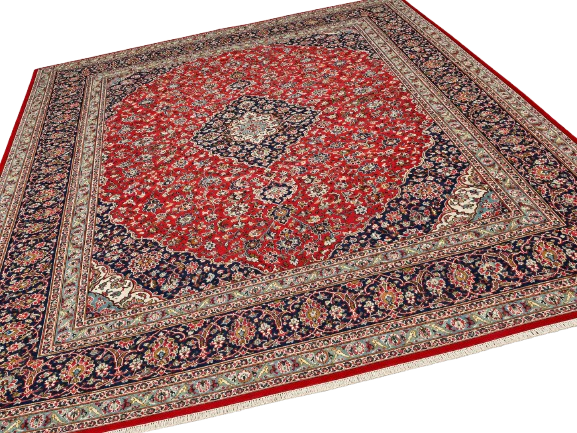
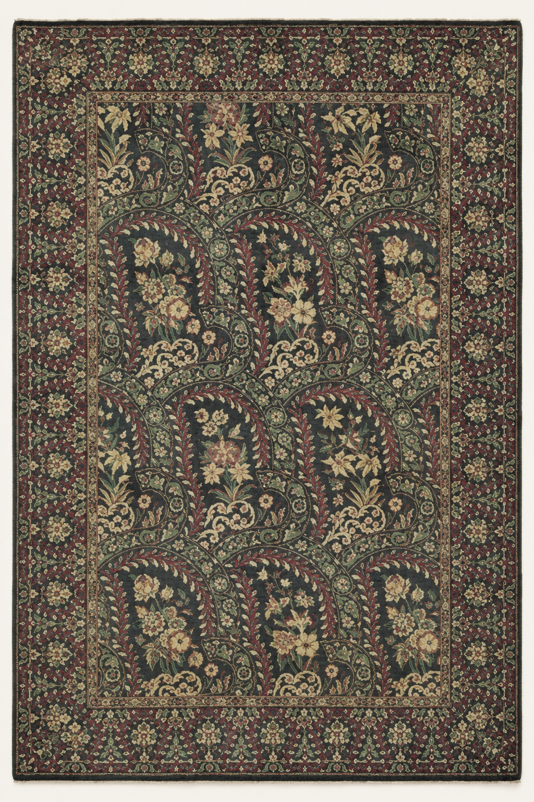
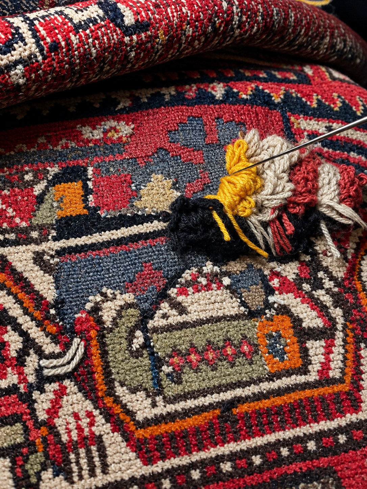
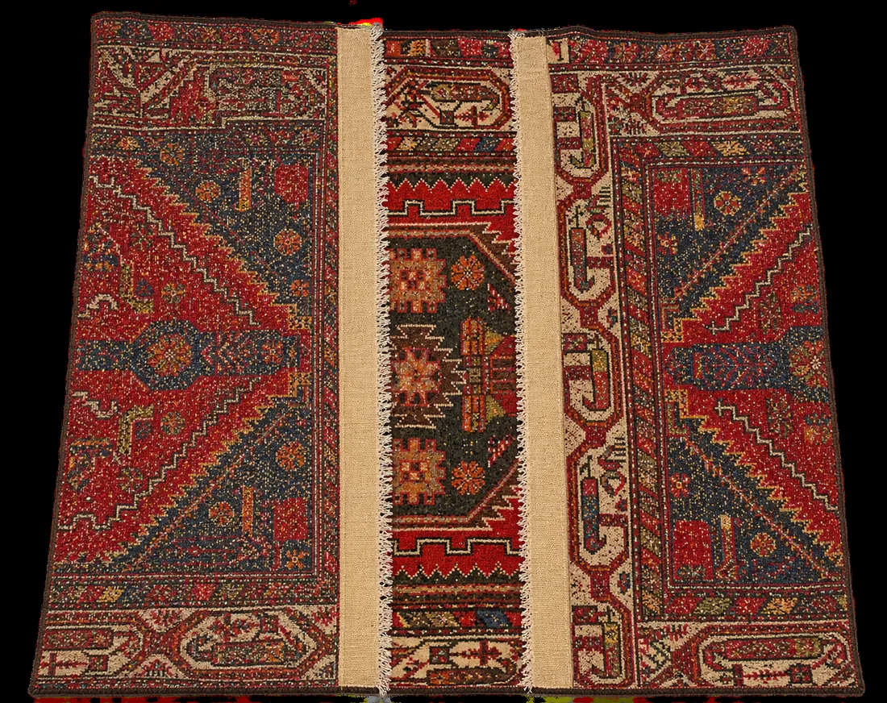
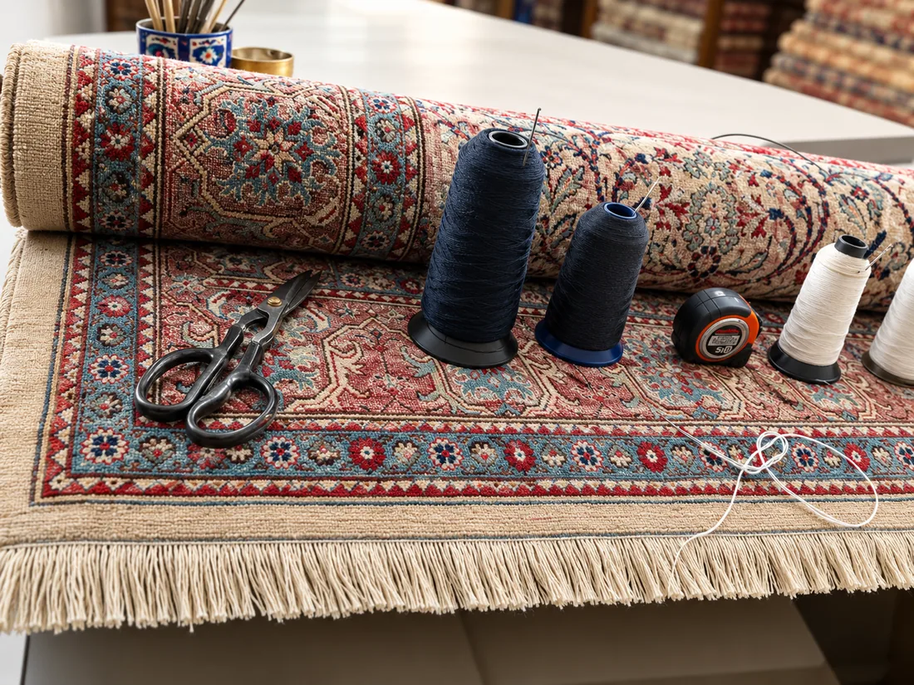
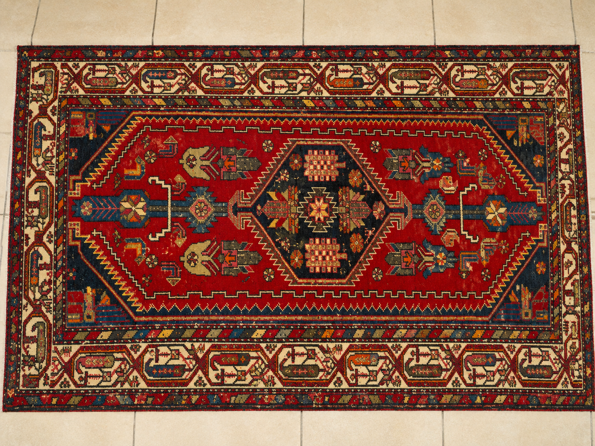
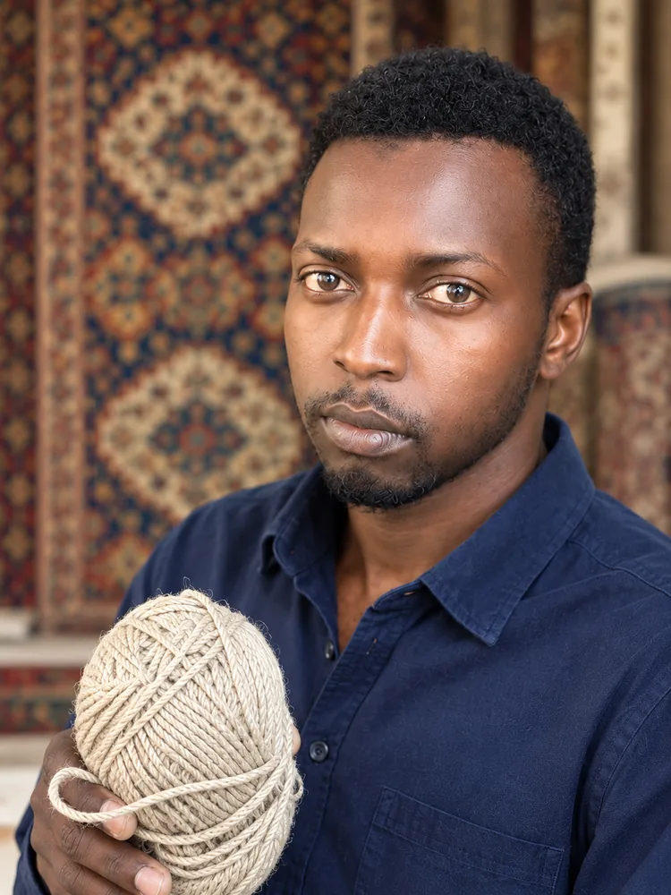

01
Persian Carpets
Explore distinctive carpets and the details that make each piece special.
Beautiful carpets deserve expert care. Discover distinctive Persian carpets and the craftsmanship behind their restoration.

Persian carpets are more than floor coverings. They are expressions of craftsmanship, tradition and character, often carrying stories that span generations.
At Silk & Wool Weave & Wonder, these pieces are presented with care — from distinctive carpet details to the careful work involved in restoration.
A considered approach to carpets, from discovering a beautiful piece to cleaning, repair and restoration.
Explore distinctive carpets and the details that make each piece special.
Thoughtful care for carpets that need freshening and attention.
Visible repair work brought into focus, with care for the character of the carpet.
A closer look at the carpet imagery you provided — from full pieces to intricate details.








Watch the repair footage to see the hands-on craftsmanship behind the restoration work.
A closer look at the condition, repair work and final result of the restoration process.

Final restoration — second viewFrom careful preparation to visible repair, the restoration section gives visitors a closer view of the work.
Silk & Wool Weave & Wonder is built around hands-on care, detailed restoration and respect for the character of every carpet.
From traditional repair work to careful finishing, the focus is on giving each piece the attention it deserves.

Interested in a carpet, professional care or restoration? Contact us directly on WhatsApp or email.